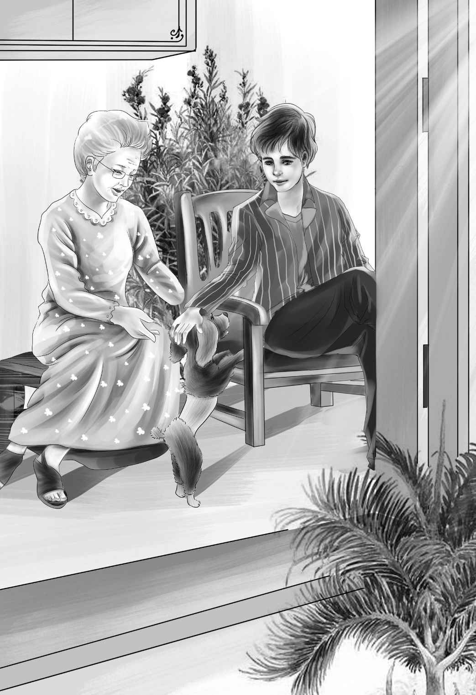

Ben or Mike
迈克和花花回到屋里，迈克低声对班尼耳语道：“蓝帽人刚刚被我们抓住了。”
“是吗，他戴蓝帽子了吗？”班尼问道。
“没有，什么帽子都没戴，”迈克说，“就像我跟你说过的那样。”
“你干吗不早点告诉我？”班尼埋怨道，“那样的话，望望和我就可以一起跟去了。”
“来不及了嘛！”迈克说，“嘘——别说话了！”
不一会儿，电影放完了，屋里又变得灯火通明。客人们围坐在桌前，尽情享用着馅饼和咖啡。正在这时，卡特先生悄悄地回来了。
班尼和迈克默默地注视着卡特先生。
“事情全解决了。”卡特先生轻轻对他俩说。
“那个坏蛋去哪儿了？”迈克问。
“他被重新关进了监狱。这次他的牢房是坐定了，他可是被四个州通缉的逃犯啊！”卡特先生说，“多亏你们两个小家伙帮了我大忙！更重要的是，你们保守了秘密。”
“待会儿我要把这句话转述给亨利，”班尼兴奋地叫道，“他总觉得我管不住自己的嘴。”
“我会亲自告诉他的，”卡特先生笑着说，“杰西听了肯定也会很高兴，她待你就像妈妈一样，班尼！”
“我也是这么觉得的。”班尼说。
“她总是那么无微不至地看管着你！”迈克说。
“是照顾！”班尼纠正道。
“好吧，照顾就照顾吧！”迈克点点头。他这次居然没抬杠，让班尼很是惊讶。
客人们纷纷告辞，小店里只剩下伍德一家、奥登一家和卡特先生。
卡特先生说：“大家请坐好，我有事情要宣布。”
待大家安静下来，卡特先生方才说道：“追捕蓝帽人的行动已经顺利结束，犯人已被捉住，真相也大白于天下了。”
“哦，究竟是怎么回事儿？”简姑婆兴奋地问。
卡特先生把整件事情的来龙去脉都告诉了姑婆，特别强调了花花的功劳。
“花花，你可以用不着再吼叫了，”卡特先生拍了拍花花光滑的脑袋，“坏蛋已经被抓走了。”

“真让人高兴！”维莉轻轻地说，“不过，虽然这种事情你们男生觉得挺刺激的，我可不希望再次发生。”
“没错，”卡特先生微笑地看着维莉，“我也不希望再发生了。”
“好吧，万事大吉了，我的谜案算是给破了，对吧？”
“不对，才不是你的谜案呢！”班尼大叫道，“是我的谜案！”
“是我的小狗发现了蓝帽人！”迈克嚷道。
“可是望望也帮了忙，是它发现了汽油桶！”班尼针锋相对。
迈克一时语塞，然后说道：“好吧，班尼，确实是你的谜案，因为整个矿都是属于你们家的。”
“算了算了，”班尼慢慢地说，“就说是你的谜案好了，毕竟整件事情都是从你家失火开始的。”
亨利对迈克笑道：“迈克，你怎么像变了个人似的？”
“我说什么来着？”伍德太太说，“迈克正在变成一个善解人意的好孩子。他不会总吵架了。我早就说过，跟班尼在一起，对迈克有好处。”
亨利也笑了：“我也说过，跟迈克一起玩，班尼才收获多多呢！他俩真是一对儿！”
“是的，小伙子们，你俩是天生的好搭档！”卡特先生眨了眨眼睛，“我要给你们留个悬念——你们明年夏天还能聚在一起，只是不在这里。”
“在哪儿？”杰西兴奋地问，“我们都会聚在一起吗？”
“是的，大家会团聚！但是其他的内容，暂时要保密。”
“哦，又是秘密？我猜又是爷爷准备的惊喜，”亨利说，“他总有令我们出乎意料的点子。”
“好了，我只能告诉你们这么多了。你们几个孩子——迈克，还有你们的爷爷，都和这个秘密有牵连。”
“有花花和望望吗？”迈克问。
“有望望，但是没有花花。”
孩子们绞尽脑汁也猜不透到底是什么秘密。
杰西又问道：“卡特先生，你也在这个秘密里吗？”
“不！”卡特先生神秘地微笑着，注视着杰西，“很遗憾我不在。”
之后，无论孩子们再怎么刨根问底，卡特先生都只是摇头，决不再透露任何信息了。
最后，迈克放弃了：“咱们还是别问卡特先生了，他不要——不会告诉我们的。”
“迈克，你的语法进步神速啊！”亨利说，“说不定你以后会成为一名老师呢！”
“我才不要当老师，我要成为联邦调查局的探长！”迈克说。
“是的，他有这个潜力！”卡特先生说，“我还要告诉你们，尽管迈克和班尼说起话来总是滔滔不绝——但他们绝对清楚，什么话该讲，什么话不该讲。”
班尼沉思了一会儿，然后走到卡特先生面前，将手搭到他的肩膀上，“我想，这个案子叫‘迈克的谜案’是对的！因为是迈克的小狗发现了帽子。就算我在家里陪着爷爷，根本没有来这里，它还是会发现帽子的。”
“班尼说得对！”大伙儿异口同声地说。
“你真是个好孩子，班尼！”伍德太太赞扬道。
“班尼，你真是善解人意！”迈克说，“感谢之至！”
迈克的文绉绉将大家都逗笑了。但大家知道，这的确是迈克的谜案，永远都是！